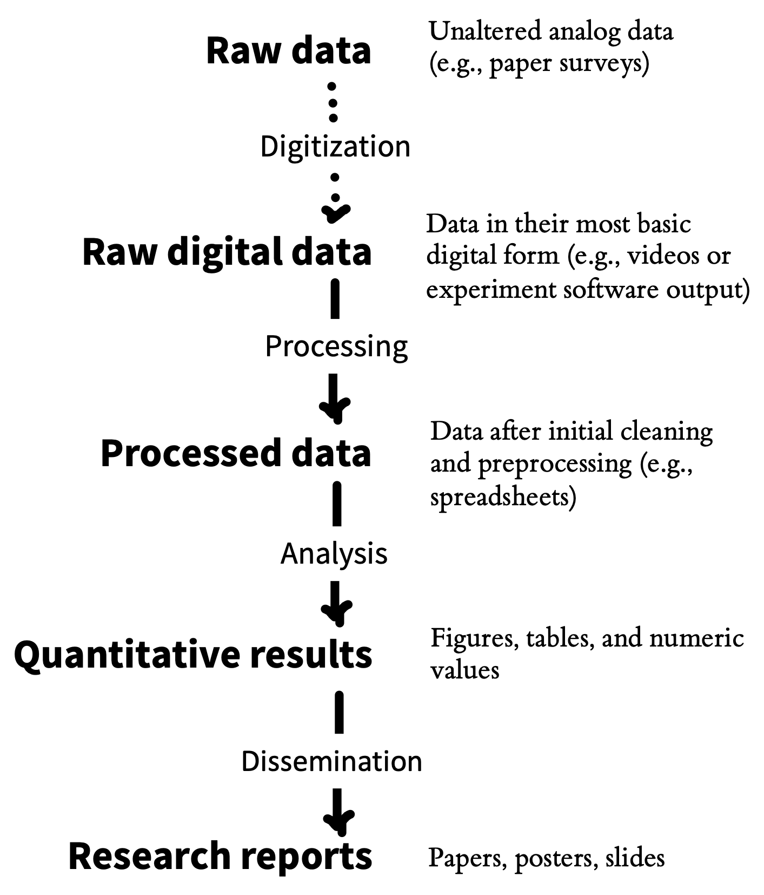
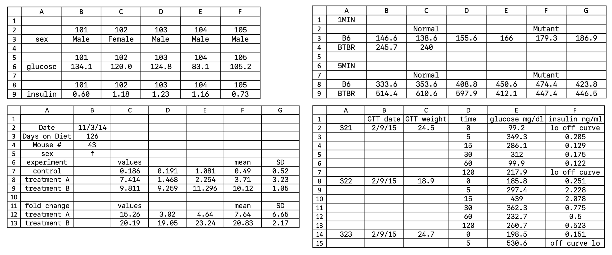
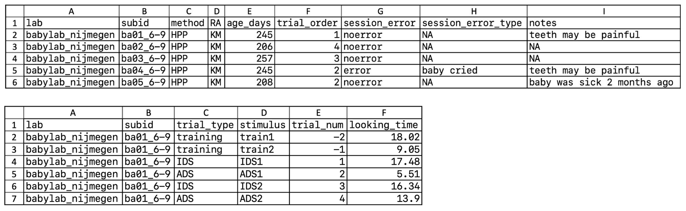
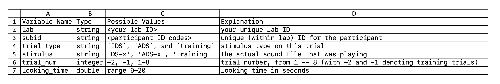

| Good name | Good alternative | Avoid |
|---|---|---|
| subject_id | SubID | subject # |
| sex | female | M/F |
| rt_ms | reaction_time | rt (millisec.) |
13 Project management
learning goals
- Manage your research projects efficiently and transparently
- Develop strategies for data organization
- Optimize sharing of research products, like data and analysis code, by ensuring they are findable, accessible, interoperable, reusable (FAIR)
- Discuss potential ethical constraints on sharing research products
Your closest collaborator is you six months ago, but you don’t reply to emails.
—Karl Broman (2015), quoting @gonuke on Twitter
Have you ever returned to an old project folder to find a chaotic mess of files with names like analysis-FINAL, analysis-FINAL-COPY, and analysis-FINAL-COPY-v2? Which file is actually the final version!? Or perhaps you’ve spent hours searching for a data file to send to your advisor, only to realize with horror that it was only stored on your old laptop—the one that experienced a catastrophic hard drive failure when you spilled coffee all over it one sleepy Sunday morning. These experiences may make you sympathetic to Karl Broman’s quip above. Good project management practices not only make it easier to share your research with others, they also make for a more efficient and less error-prone workflow that will avoid giving your future self a headache. This chapter is about the process of managing all of the products of your research workflow—methodological protocols, materials,1 data, and analysis scripts. We focus especially on managing projects in ways that maximize their value to you and to the broader research community by aligning with open science practices (maximizing transparency).
1 We use the term “materials” here to cover a range of things another researcher might need in order to repeat your study—for example, stimuli, survey instruments, and code for computer-based experiments.

2 The world’s oldest scientific journal is the Philosophical Transactions of the Royal Society, first published in 1665.
When we talk about research products, we typically think of articles in academic journals, which have been scientists’ main method of communication since the scientific revolution in the 1600s.2 But articles only provide written summaries of research; they are not the original research products. In recent years, there have been widespread calls for increased sharing of research products, such as materials, data, and analysis code (Munafò et al. 2017). When shared appropriately, these other products can be as valuable as a summary article: Shared stimulus materials can be reused for new studies in creative ways; shared analysis scripts can allow for reproduction of reported results and become templates for new analyses; and shared data can enable new analyses or meta-analyses. Indeed, many funding agencies, and some journals, now require that research products be shared publicly, except when there are justified ethical or legal constraints, such as with sensitive medical data (Nosek et al. 2015).
Data sharing, in particular, has been the focus of intense interest. Sharing data is associated with benefits in terms of error detection (Hardwicke et al. 2021), creative reuse that generates new discoveries (Voytek 2016), increased citations (Piwowar and Vision 2013), and detection of fraud (Simonsohn 2013). According to surveys, researchers are usually willing to share data in principle (Houtkoop et al. 2018), but unfortunately, in practice, they often do not, even if you directly ask them (Hardwicke and Ioannidis 2018). Often authors simply do not respond, but if they do, they frequently report that data have been lost because they were stored on a misplaced or damaged drive, or team members with access to the data are no longer contactable (Tenopir et al. 2020).
As we have discussed in chapter 3, even when data are shared, they are not always formatted in a way that they can be easily understood and reused by other researchers, or even the original authors! This issue highlights the critical role of metadata: information that documents the data (and other products) that you share, including README files, codebooks that document datasets themselves, and licenses that provide legal restrictions on reuse. We will discuss best practices for metadata throughout the chapter.

Sound project management practices and sharing of research projects are mutually reinforcing goals that bring benefits for both yourself, the broader research community, and scientific progress. One particularly important benefit of good project management practices is that they enable reproducibility. As we discussed in chapter 3, computational reproducibility involves being able to trace the provenance of any reported analytic result in a research report back to its original source. That means being able to recreate the entire analytic chain from data collection to data files, though analytic specifications to the research results reported in text, tables, and figures. If data collection is documented appropriately, and if data are stored, organized, and shared, then the provenance of a particular result is relatively easy to verify. But once this chain (figure 13.2) is broken, it can be hard to reconstruct (Hardwicke et al. 2018). That’s why it’s critical to build good project management practices into your research workflow right from the start.
In this chapter, you will learn how to manage your research project both efficiently and transparently.3 Working toward these goals can create a virtuous cycle: if you organize your research products well, they are easier to share later, and if you assume that you will be sharing, you will be motivated to organize your work better! We begin by discussing some important principles of project management, including folder structure, file naming, organization, and version control. Then we zoom in specifically on data and discuss best practices for data sharing. We end by discussing the question of what research products to share and some of the potential ethical issues that might limit your ability to share in certain circumstances.
3 This chapter—especially the last section—draws heavily on Klein et al. (2018), an article on research transparency that several of us contributed to.
case study
ManyBabies, ManySpreadsheetFormats!
The ManyBabies project is an example of “Big Team Science” in psychology. A group of developmental psychology researchers (including some of us) were worried about many of the issues of reproducibility, replicability, and experimental methods that we’ve been discussing throughout this book, so they set up a large-scale collaboration to replicate key effects in developmental science. The first of these studies was ManyBabies 1 (The ManyBabies Consortium et al. 2020), a study of infants’ preference for baby-talk (also known as “infant directed speech”).
The core team expected a handful of labs to contribute, but after a year-long data collection period, they ended up receiving data from 69 labs around the world! The outpouring of interest signaled a lot of enthusiasm from the community for this kind of collaborative science. Unfortunately, it also made for a tremendous data management headache. All kinds of complications and hilarity ensued as the idiosyncratic data formatting preferences of the various labs were reorganized to fit into a single standardized analysis pipeline (Byers-Heinlein et al. 2020).
All of the specific formatting changes that individual labs made were reasonable—altering column names for clarity, combining templates into a single Excel file, changing units (e.g., from seconds to milliseconds)—but together they created a very challenging data validation problem for the core analysis team, requiring many dozens of hours of coding and hand-checking. The data checking was critical: an error in one lab’s data was flagged during validation and led to the painful decision to drop those data from the final dataset. In future ManyBabies projects, the group has committed to using shared data validation software (https://manybabies.org/validator) to ensure that data files uploaded by individual labs conform to a shared standard.
13.1 Principles of project management
A lot of project management problems can be avoided by following a very simple file organization system.4 For those researchers who “grew up” managing their files locally on their own computers and emailing colleagues versions of data files and manuscripts with names like manuscript-FINAL-JS-rev1.xlsx, a few aspects of this system may seem disconcerting. However, with a little practice, this new way of working will start to feel intuitive and have substantial benefits.
4 We’re going to talk in this chapter about managing research products, which is one important part of project management. We won’t talk about some other aspects of managing projects such as calendaring, managing tasks, or project communications. These are all important, they are just a bit out of scope for a book on doing experiments!
Here are the principles:
- There should be exactly one definitive copy of each document in the project, with its name denoting what it is. For example,
fifo_manuscript.Rmdorfifo_manuscript.docxis the write-up of the “fifo” project as a journal manuscript. - The location of each document should be within a folder that serves to uniquely identify the document’s function within the project. For example,
analysis/experiment1/eye_tracking_preprocessing.Rmdis clearly the file that performs preprocessing for the analysis of eye-tracking data from experiment 1. - The full project should be accessible to all collaborators via the cloud, either using a version control platform (e.g., GitHub) or another cloud storage provider (e.g., Dropbox, Google Drive).
- The revision history of all text and text-based documents (minimally, data, analysis code, and manuscript files) should be archived automatically. Automatic versioning is the key feature of all version control systems and is often included by cloud storage providers.
Keeping these principles in mind, we discuss best practices for project organization, version control, and file naming.
13.1.1 Organizing your project
To the greatest extent possible, all files related to a project should be stored in the same project folder (with appropriate subfolders), and on the same storage provider. There are cases where this is impractical due to the limitations of different software packages. For example, in many cases, a team will manage its data and analysis code via GitHub but decide to write collaboratively using Google Docs, Overleaf, or another collaborative platform. (It can also be hard to ask all collaborators to use a version control system they are unfamiliar with.) In that case, the final paper should still be linked in some way to the project repository.5
5 The biggest issue that comes up in using a split workflow like this is the need to ensure reproducible written products, a process we cover in chapter 14.
Figure 13.3 shows an example project stored on the Open Science Framework. The top-level folder contains subfolders for analyses, materials, raw and processed data (kept separately). It also contains the paper manuscript and, critically, a README file in a text format that describes the project. A README is a great way to document any other metadata that the authors would like to be associated with the research products, for example a license, explained below.

There are many reasonable ways to organize the subfolders of a research project, but the broad categories of materials, data, analysis, and writing are typically present.6 In some projects—such as those involving multiple experiments or complex data types—you may have to adopt a more complex structure. In many of our projects, it’s not uncommon to find paths like /data/raw_data/exp1/demographics. The key principle is to create a hierarchical structure in which subfolders uniquely identify the part of the broader space of research products that are found inside them—that is, /data/raw_data/exp1 contains all the raw data from experiment 1, and /data/raw_data/exp1/demographics contains all the raw demographics data from that particular experiment.
6 We like the scheme followed by Project TIER (https://www.projecttier.org), which provides very clear guidance about file structure and naming conventions. TIER is primarily designed for a copy-and-paste workflow, which is slightly different from the “dynamic documents” workflow that we primarily advocate for (e.g., using R Markdown or Quarto as in appendix C).
13.1.2 Versioning
Probably everyone who has ever collaborated electronically has experienced the frustration of editing a document, only to find out that you are editing the wrong version—perhaps some of the problems you are working on have already been corrected, or perhaps the section you are adding has already been written by someone else. A second common source of frustration comes when you take a wrong turn in a project, perhaps by reorganizing a manuscript in a way that doesn’t work or refactoring code in a way that turns out to be short-sighted.
These two problems are solved by modern version control systems. Here we focus on the use of Git, which is the most widely used version control system. Git is a great general solution for version control, but many people—including several of us—don’t love it for collaborative manuscript writing. We’ll introduce Git and its principles here, while noting that online collaboration tools like Google Docs and Overleaf7 can be easier for writing prose (as opposed to code); we cover this topic in a bit more depth in chapter 14.
7 Overleaf is actually supported by Git on the backend!

Git is a tool for creating and managing projects, which are called repositories. A Git repository is a directory whose revision history is tracked via a series of commits—snapshots of the state of the project. These commits can form a tree with different branches, as when two contributors to the project are working on two different parts simultaneously (figure 13.4). These branches can later be merged either automatically or via manual intervention in the case of conflicting changes.
Commonly, Git repositories are hosted by an online service like GitHub to facilitate collaboration. With this workflow, a user makes changes to a local version of the repository on their own computer and pushes those changes to the online repository. Another user can then pull those changes from the online repository to their own local version. The online “origin” copy is always the definitive copy of the project, and a record is kept of all changes. Chapter B provides a practical introduction to Git and GitHub, and there are a variety of good tutorials available online and in print (Blischak, Davenport, and Wilson 2016).
Collaboration using version control tools is designed to solve many of the problems we’ve been discussing:
- A remotely hosted Git repository is a cloud-based backup of your work, meaning it is less vulnerable to accidental erasure.8
- By virtue of having versioning history, you have access to previous drafts in case you find you have been following a blind alley and want to roll back your changes.
- By creating new branches, you can create another, parallel history for your project so that you can try out major changes or additions without disturbing the main branch in the process.
- A project’s commit history is labeled with each commit’s author and date, facilitating record-keeping and collaboration.
- Automatic merging can allow synchronous editing of different parts of a manuscript or codebase.9
8 In 48 BC, Julius Caesar accidentally burned down part of the Library of Alexandria where the sole copies of many ancient works were stored. To this day, many scientists have apparently retained the habit of storing single copies of important information in vulnerable locations. Even in the age of cloud computing, hard drive failure is a surprisingly common source of problems!
9 Version control isn’t magic, and if you and a collaborator edit the same line(s), you will have to merge your changes by hand. But Git will at least show you where the conflict is!
Organizing a project repository for collaboration and hosting on a remote platform is an important first step toward sharing! Many of our projects (like this book) are actually born open: we do all of our work on a publicly hosted repository for everyone to see (Rouder 2015). This philosophy of “working in the open” encourages good organization practices from the beginning. It can feel uncomfortable at first, but this discomfort soon vanishes as you realize that basically no one is looking at your in-progress project.
One concern that many people raise about sharing in-progress research openly is the possibility of “scooping”—that is, other researchers getting an idea or even data from the repository and writing a paper before you do. We have two responses to this concern. First, the empirical frequency of this sort of scooping is difficult to determine but likely very low—we don’t know of any documented cases. Mostly, the problem is getting people to care about your experiment at all, not people caring so much that they would publish using your data or materials! In Gary King’s words (King and Shieber 2013), “The thing that matters the least is being scooped. The thing that matters the most is being ignored.” On the other hand, if you are in an area of research that you perceive to be competitive, or where there is some significant risk of this kind of shenanigans, it’s very easy to keep part, or all, of a repository private among your collaborators until you are ready to share more widely. All of the benefits we described still accrue. For an appropriately organized and hosted project, often the only steps required to share materials, data, and code are (1) to make the hosted repository public and (2) to link it to an archival storage platform like the Open Science Framework.
13.1.3 File names
As Phil Karlton reportedly said, “There are only two hard things in Computer Science: cache invalidation and naming things.” What’s true for computer science is true for research in general.10 Naming files is hard! Some very organized people survive on systems like INFO-r1-draft-2020-07-13-js.docx, meaning “the INFO project revision 1 draft of July 13th, 2020, with edits by JS.” But this kind of system needs a lot of rules and discipline, and it requires everyone in a project to buy in completely.
10 We won’t talk about cache invalidation; that’s a more technical problem in computer science that is beyond the scope of this book.
On the other hand, if you are naming a file in a hierarchically organized version control repository, the naming problem gets dramatically easier. All of a sudden, you have a context in which names make sense. data.csv is a terrible name for a data file on its own. But the name is actually perfectly informative—in the context of a project repository with a README that states that there is only a single experiment, a repository structure such that the file lives in a folder called raw_data, and a commit history that indicates the file’s commit date and author.
As this example shows, naming is hard out of context. So here’s our rule: name a file with what it contains. Don’t use the name to convey the context of who edited it, when, or where it should go in a project. That is metadata that the platform should take care of.11
11 The platform won’t take care of it if you email it to a collaborator—precisely why you should share access to the full platform, not just the out-of-context file!
13.2 Data Management
We’ve just discussed how to manage projects in general; in this section we zoom in on datasets specifically. Data are often the most valuable research product because they represent the evidence generated by our research. We maximize the value of the evidence when other scientists can reuse it for independent verification or generation of novel discoveries. Yet, lots of research data are not reusable, even when they are shared. In chapter 3, we discussed Hardwicke et al.’s (2018) study of analytic reproducibility. But before we were even able to try and reproduce the analytic results, we had to look at the data. When we did that, we found that only 64% of shared datasets were both complete and understandable.
How can you make sure that your data are managed so as to enable effective sharing? We make four primary recommendations:
- save your raw data
- document your data collection process
- organize your raw data for later analysis
- document your data using a codebook or other metadata
Let’s look at each in turn.
13.2.1 Save your raw data
Raw data take many forms. For many of us, the raw data are those returned by the experimental software; for others, the raw data are videos of the experiment being carried out. Regardless of the form of these data, save them! They are often the only way to check issues in whatever processing pipeline brings these data from their initial state to the form you analyze. They also can be invaluable for addressing critiques or questions about your methods or results later in the process. If you need to correct something about your raw data, do not alter the original files. Make a copy, and make a note about how the copy differs from the original.12
12 Future you will thank present you for explaining why there are two copies of subject 19’s data after you went back and corrected a typo.
13 The precise repository you use for this task is likely to vary by the kind of data that you’re trying to store and the local regulatory environment. For example, in the United States, to store de-anonymized data with certain fields requires a server that is certified for HIPAA (the relevant privacy law). Many—but by no means all—universities provide HIPAA-compliant cloud storage.
Raw data are often not anonymized, or even anonymizable. Anonymizing them sometimes means altering them (e.g., in the case of downloaded logs from a service that might include IDs or IP addresses). Or in some cases, anonymization is difficult or impossible without significant effort and loss of some value from the data, for example, for video data or MRI data (Bischoff-Grethe et al. 2007). Unless you have specific permission for broad distribution of these identifiable data, the raw data may then need to be stored in a different way. In these cases, we recommend saving your raw data in a separate repository with the appropriate permissions. For example, in the ManyBabies 1 study we described above, the public repository does not contain the raw data contributed by participating labs, which the team could not guarantee was anonymized; these data are instead stored in a private repository.13
You can use your repository’s README to describe what is and is not shared. For example, a README might state, “We provide anonymized versions of the files originally downloaded from Qualtrics” or “Participants did not provide permission for public distribution of raw video recordings, which are retained on a secure university server.” Critically, if you share the derived tabular data, it should still be possible to reproduce the analytic results in your paper, even if checking the provenance of those numbers from the raw data is not possible for every reader.14
14 One way we organize the raw data in some of our paper is to have three different subfolders in the data/ directory: raw/, for the original data; processed/, for the anonymized or otherwise preprocessed data; and /scripts, for the code that does the preprocessing. Since these folders are in a Git repository, we can then add raw/* to the .gitignore file, ensuring that they are never added to the public version of the repository even though they sit within our local file hierarchy in the appropriate place.
15 A word about subject identifiers. These should be anonymous identifiers, like randomly generated numbers, that cannot be linked to participant identities (like date of birth) and are unique. You laugh, but one of us was in a lab where all the subject IDs were the date of test and the initials of the participant. These were neither unique nor anonymous. One common convention is to give your study a code-name and to number participants sequentially, so your first participant in a sequence of experiments on information processing might be INFO-1-01.
One common practice is the use of participant identifiers to link specific experimental data—which, if they are responses on standardized measures, rarely pose a significant identifiability risk—to demographic data sheets that might include more sensitive and potentially identifiable data.15 Depending on the nature of the analyses being reported, the experimental data can then be shared with limited risk. Then a selected set of demographic variables—for example, those that do not increase privacy risks but are necessary for particular analyses—can be distributed as a separate file and joined back into the data later.
13.2.2 Document your data collection process
To understand the meaning of the raw data, it’s helpful to share as much as possible about the context in which they were collected. This practice also helps communicate the experience that participants had in your experiment. Documentation of this experience can take many forms.
If the experimental experience was a web-based questionnaire, archiving this experience can be as simple as downloading the questionnaire source.16 For more involved studies, it can be more difficult to reconstruct what participants went through. This kind of situation is where video data can shine (Gilmore and Adolph 2017). A video recording of a typical experimental session can provide a valuable tutorial for other experimenters—as well as good context for readers of your paper. This is doubly true if there is a substantial interactive element to your experimental experience, as is often the case for experiments with children. For example, in our ManyBabies case study, the project shared “walk-through” videos of experimental sessions for many of the participating labs, creating a repository of standard experiences for infant development studies. If nothing else, a video of an experimental session can sometimes be a very nice archive of a particular context.17
16 If it’s in a proprietary format like a Qualtrics .QSF file, a good practice is to convert it to a simple plain text format as well so it can be opened and reused by folks who do not have access to Qualtrics (which may include future you!).
17 Videos of experimental sessions also are great demos to show in a presentation about your experiment, provided you have permission from the participant.
Regardless of what specific documentation you keep, it’s critical to create some record linking your data to the documentation. For a questionnaire study, for example, this documentation might be as simple as a README that says that the data in the data/raw/ directory were collected on a particular date using the file named experiment1.qsf. This kind of “connective tissue” linking data to materials can be very important when you return to a project with questions. If you spot a potential error in your data, you will want to be able to examine the precise version of the materials that you used to gather those data in order to identify the source of the problem.
13.2.3 Organize your data for later analysis: Spreadsheets
Data come in many forms, but chances are that at some point during your project you will end up with a spreadsheet full of information. Well-organized spreadsheets can mean the difference between project success and failure! A wonderful article by Broman and Woo (2018) lays out principles of good spreadsheet design. We highlight some of their principles here (with our own, opinionated ordering):
- Make it a rectangle.18 Nearly all data analysis software, like SPSS, Stata, Jamovi, and JASP (and many R packages), require data to be in a tabular format.19 If you are used to analyzing data exclusively in a spreadsheet, this kind of tabular data isn’t quite as readable, but readable formatting gets in the way of almost any analysis you want to do. Figure 13.5 gives some examples of nonrectangular spreadsheets. All of these will cause any analytic package to choke because of inconsistencies in how rows and columns are used!
18 Think of your data like a well-ordered plate of sushi, neatly packed together without any gaps.
19 Tabular data is a precursor to “tidy” data, which we describe in more detail in appendix D.

- Choose good names for your variables. No one convention for name formatting is best, but it’s important to be consistent. We tend to follow the tidyverse style guide and use lowercase words separated by underscores (
_). It’s also helpful to give units where these are available—for example, whether reaction times are in seconds or milliseconds. Table 13.1 gives some examples of good and bad variable names.
Be consistent with your cell formatting. Each column should have one kind of thing in it. For example, if you have a column of numerical values, don’t all of a sudden introduce text data like “missing” into one of the cells. This kind of mixing of data types can cause havoc down the road. Mixed or multiple entries also don’t work, so don’t write “0 (missing)” as the value of a cell. Leaving cells blank is also risky because it is ambiguous. Most software packages have a standard value for missing data (e.g.,
NAis what R uses). If you are writing dates, please be sure to use the “global standard” (ISO 8601), which is YYYY-MM-DD. Anything else can be misinterpreted easily.20Decoration isn’t data. Decorating your data with bold headings or highlighting may seem useful for humans, but it isn’t uniformly interpreted or even recognized by analysis software (e.g., reading an Excel spreadsheet into R will scrub all your beautiful highlighting and artistic fonts), so do not rely on it.
Save data in plain text files. The CSV (comma-delimited) file format is a common standard for data that is uniformly understood by most analysis software (it is an “interoperable” file format).21 The advantage of CSVs is that they are not proprietary to Microsoft or another company and can be inspected in a text editor, but be careful: they do not preserve Excel formulas or formatting!
20 Dates in Excel deserve special mention as a source of terribleness. Excel has an unfortunate habit of interpreting information that has nothing to do with dates as dates, destroying the original content in the process. Excel’s issue with dates has caused unending horror in the genetics literature, where gene names are automatically converted to dates, sometimes without the researchers noticing (Ziemann, Eren, and El-Osta 2016). In fact, some gene names have had to be changed in order to avoid this issue!
21 Be aware of some interesting differences in how these files are output by European vs American versions of Microsoft Excel! You might find semicolons instead of commas in some datasets.
Given the points above, we recommend that you avoid analyzing your data in Excel. If it is necessary to analyze your data in a spreadsheet program, we urge you to save the raw data as a separate CSV and then create a distinct analysis spreadsheet so as to be sure to retain the raw data unaltered by your (or Excel’s) manipulations.
13.2.4 Organize your data for later analysis: Software
Many researchers do not create data by manually entering information into a spreadsheet. Instead they receive data as the output from a web platform, software package, or device. These tools typically provide researchers limited control over the format of the resulting tabular data export. Case in point is the survey platform Qualtrics, which—at least at the moment—provides data with not one but two header rows, complicating import into almost all analysis software!22
22 The R package qualtRics (Ginn, O’Brien, and Silge 2024) can help with this.
That said, if your platform does allow you to control what comes out, you can try to use the principles of good tabular data design outlined above. For example, try to give your variables (e.g., questions in Qualtrics) sensible names!
accident report
Bad variable naming can lead to analytic errors!
In our methods class, students often try to reproduce the original analyses from a published study before attempting to replicate the results in a new sample of participants. When Kengthsagn Louis looked at the code for the study she was interested in, she noticed that the variables in the analysis code were named horribly (presumably because they were output this way by the survey software). For example, one piece of Stata code looked like this:
gen recall1=.
replace recall1=0 if Q21==1
replace recall1=1 if Q21==3 | Q21==5 | Q21==6
replace recall1=2 if Q21==2 | Q21==4 | Q21==7 | Q21==8
replace recall1=0 if Q69==1
replace recall1=1 if Q69==3 | Q69==5 | Q69==6
replace recall1=2 if Q69==2 | Q69==4 | Q69==7 | Q69==8
ta recall1In the process of translating this code into R in order to reproduce the analyses, Kengthsagn and a course teaching assistant, Andrew Lampinen, noticed that some participant responses had been assigned to the wrong variables. Because the variable names were not human-readable, this error was almost impossible to detect. Since the problem affected some of the inferential conclusions of the article, the article’s author—to their credit—issued an immediate correction (M. B. Petersen 2019).
The moral of the story: obscure variable names can hide existing errors and create opportunities for further error! Sometimes you can adjust these in your experimental software, avoiding the issue. If not, make sure to create a “key” and translate the names immediately, double checking after you are done.
13.2.5 Document the format of your data
Even the best-organized tabular data are not always easy to understand by other researchers, or even yourself, especially after some time has passed. For that reason, you should make a codebook (also known as a data dictionary) that explicitly documents what each variable is. Figure 13.7 shows an example codebook for the trial-level data in the bottom of figure 13.6. Each row represents one variable in the associated dataset. Codebooks often describe what type of variable a column is (e.g., numeric, string), and what values can appear in that column. A human-readable explanation is often given as well, providing units (e.g., “seconds”) and a translation of numeric codes (e.g., “test condition is coded as 1”) where relevant.


Creating a codebook need not require a lot of work. Almost any documentation is better than nothing! There are also several R packages that can automatically generate a codebook for you, for example codebook (Arslan 2019), dataspice (Boettiger et al. 2021), and dataMaid (A. H. Petersen and Ekstrøm 2019). Adding a codebook can substantially increase the reuse value of data and prevent hours of frustration as future you and others try to decode your variable names and assumptions.
13.4 Chapter summary
All of the hard work you put into your experiments—not to mention the contributions of your participants—can be undermined by bad data and project management. As our accident reports and case study show, bad organizational practices can at a minimum cause huge headaches. Sometimes the consequences can be even worse. On the flip side, starting with a firm organizational foundation sets your experiment up for success. These practices also make it easier to share all of the products of your research, not just your findings. Such sharing is useful both for individual researchers and for the field as a whole.
discussion questions
Find an Open Science Framework repository that corresponds to a published paper. What is their strategy for documenting what is shared? How easy is it to figure out where everything is and if the data and materials sharing is complete?
Open up the US Department of Health and Human Services “safe harbor” standards (https://www.hhs.gov/hipaa/for-professionals/privacy/special-topics/de-identification/index.html) and navigate to the section called “The De-identification Standard.” Go through the list of identifiers that must be removed. Are there any on this list that you would need to include in your dataset in order to conduct your own research? Can you think of any others that do not fall on this list?
readings
- A more in-depth tutorial on various aspects of scientific openness: Klein, Olivier, Tom E. Hardwicke, Frederik Aust, Johannes Breuer, Henrik Danielsson, Alicia Hofelich Mohr, Hans IJzerman, Gustav Nilsonne, Wolf Vanpaemel, and Michael C. Frank (2018). “A Practical Guide for Transparency in Psychological Science.” Collabra: Psychology 4 (1): 20. https://doi.org/10.1525/collabra.158
References
Arslan, Ruben C. 2019. “How to Automatically Document Data with the Codebook Package to Facilitate Data Reuse.” Advances in Methods and Practices in Psychological Science 2 (2): 169–87. https://doi.org/10.1177/2515245919838783.
Bischoff-Grethe, Amanda, I Burak Ozyurt, Evelina Busa, Brian T Quinn, Christine Fennema-Notestine, Camellia P Clark, Shaunna Morris, et al. 2007. “A Technique for the Deidentification of Structural Brain MR Images.” Human Brain Mapping 28 (9): 892–903.
Blischak, John D, Emily R Davenport, and Greg Wilson. 2016. “A Quick Introduction to Version Control with Git and GitHub.” PLoS Computational Biology 12 (1): e1004668.
Boettiger, Carl, Scott Chamberlain, Auriel Fournier, Kelly Hondula, Anna Krystalli, Bryce Mecum, Maëlle Salmon, Kate Webbink, and Kara Woo. 2021. dataspice: Create Lightweight Schema.org Descriptions of Data. https://CRAN.R-project.org/package=dataspice.
Broman, Karl W. 2015. “Data Science Quotes.” https://github.com/kbroman/datasciquotes?tab=readme-ov-file.
Broman, Karl W, and Kara H Woo. 2018. “Data Organization in Spreadsheets.” The American Statistician 72 (1): 2–10.
Byers-Heinlein, Krista, Christina Bergmann, Catherine Davies, Michael C Frank, J Kiley Hamlin, Melissa Kline, Jonathan F Kominsky, et al. 2020. “Building a Collaborative Psychological Science: Lessons Learned from ManyBabies 1.” Canadian Psychology/Psychologie Canadienne 61 (4): 349–63.
De Montjoye, Yves-Alexandre, Laura Radaelli, Vivek Kumar Singh, et al. 2015. “Unique in the Shopping Mall: On the Reidentifiability of Credit Card Metadata.” Science 347 (6221): 536–39.
Evangelou, Evangelos, Thomas A Trikalinos, and John P. A. Ioannidis. 2005. “Unavailability of Online Supplementary Scientific Information from Articles Published in Major Journals.” The FASEB Journal 19 (14): 1943–44.
Gilmore, Rick O, and Karen E Adolph. 2017. “Video Can Make Behavioural Science More Reproducible.” Nature Human Behaviour 1, 0128 (2017). https://doi.org/10.1038/s41562-017-0128.
Ginn, Jasper, Joseph O’Brien, and Julia Silge. 2024. qualtRics: Download “Qualtrics” Survey Data. https://CRAN.R-project.org/package=qualtRics.
Hardwicke, Tom E, Manuel Bohn, Kyle MacDonald, Emily Hembacher, Michèle B. Nuijten, Benjamin N. Peloquin, Benjamin E. deMayo, Bria Long, Erica J. Yoon, and Michael C. Frank. 2021. “Analytic Reproducibility in Articles Receiving Open Data Badges at the Journal Psychological Science: An Observational Study.” Royal Society Open Science 8 (1): 201494. https://doi.org/10.1098/rsos.201494.
Hardwicke, Tom E, and John P. A. Ioannidis. 2018. “Populating the Data Ark: An Attempt to Retrieve, Preserve, and Liberate Data from the Most Highly-Cited Psychology and Psychiatry Articles.” PLOS ONE 13 (8): e0201856. https://doi.org/10.1371/journal.pone.0201856.
Hardwicke, Tom E, Maya B Mathur, Kyle Earl MacDonald, Gustav Nilsonne, George Christopher Banks, Mallory Kidwell, Alicia Hofelich Mohr, et al. 2018. “Data Availability, Reusability, and Analytic Reproducibility: Evaluating the Impact of a Mandatory Open Data Policy at the Journal Cognition.” Royal Society Open Science 5. https://doi.org/10.1098/rsos.180448.
Houtkoop, Bobby Lee, Chris Chambers, Malcolm Macleod, Dorothy V. M. Bishop, Thomas E. Nichols, and Eric-Jan Wagenmakers. 2018. “Data Sharing in Psychology: A Survey on Barriers and Preconditions.” Advances in Methods and Practices in Psychological Science 1 (1): 70–85. https://doi.org/10.1177/2515245917751886.
King, Gary, and Stuart Shieber. 2013. “Office Hours: Open Access.” YouTube. https://www.youtube.com/watch?v=jD6CcFxRelY/.
Klein, Olivier, Tom E Hardwicke, Frederik Aust, Johannes Breuer, Henrik Danielsson, Alicia Hofelich Mohr, Hans IJzerman, Gustav Nilsonne, Wolf Vanpaemel, and Michael C Frank. 2018. “A Practical Guide for Transparency in Psychological Science.” Collabra: Psychology 4 (1): 20. https://doi.org/10.1525/collabra.158.
Meyer, Michelle N. 2018. “Practical Tips for Ethical Data Sharing.” Advances in Methods and Practices in Psychological Science 1 (1): 131–44.
Munafò, Marcus R., Brian A Nosek, Dorothy V. M. Bishop, Katherine S. Button, Christopher D. Chambers, Nathalie Percie du Sert, Uri Simonsohn, Eric-Jan Wagenmakers, Jennifer J. Ware, and John P. A. Ioannidis. 2017. “A Manifesto for Reproducible Science.” Nature Human Behaviour 1 (1): 1–9. https://doi.org/10.1038/s41562-016-0021.
Nosek, Brian A, George Alter, George C Banks, Denny Borsboom, Sara D Bowman, Steven J Breckler, Stuart Buck, et al. 2015. “Promoting an Open Research Culture.” Science 348 (6242): 1422–25. https://doi.org/10.1126/science.aab2374.
Petersen, Anne Helby, and Claus Thorn Ekstrøm. 2019. “dataMaid: Your Assistant for Documenting Supervised Data Quality Screening in R.” Journal of Statistical Software 90 (6): 1–38. https://doi.org/10.18637/jss.v090.i06.
Petersen, Michael Bang. 2019. “Corrigendum: Healthy Out-Group Members Are Represented Psychologically as Infected in-Group Members.” Psychological Science 30 (12): 1792–94. https://doi.org/10.1177/0956797619887750.
Piwowar, Heather A, and Todd J Vision. 2013. “Data Reuse and the Open Data Citation Advantage.” PeerJ 1: e175.
Ross, Michael W, Martin Y Iguchi, and Sangeeta Panicker. 2018. “Ethical Aspects of Data Sharing and Research Participant Protections.” American Psychologist 73 (2): 138–45.
Rouder, Jeffrey N. 2015. “The What, Why, and How of Born-Open Data.” Behavior Research Methods 48 (3): 1062–69. https://doi.org/10.3758/s13428-015-0630-z.
Simonsohn, Uri. 2013. “Just Post It: The Lesson from Two Cases of Fabricated Data Detected by Statistics Alone.” Psychological Science 24 (10): 1875–88. https://doi.org/10.1177/0956797613480366.
Tenopir, Carol, Natalie M. Rice, Suzie Allard, Lynn Baird, Josh Borycz, Lisa Christian, Bruce Grant, Robert Olendorf, and Robert J. Sandusky. 2020. “Data Sharing, Management, Use, and Reuse: Practices and Perceptions of Scientists Worldwide.” Edited by Sergi Lozano. PLOS ONE 15 (3): e0229003. https://doi.org/10.1371/journal.pone.0229003.
The ManyBabies Consortium, Michael C Frank, Katherine Jane Alcock, Natalia Arias-Trejo, Gisa Aschersleben, Dare Baldwin, Stéphanie Barbu, et al. 2020. “Quantifying Sources of Variability in Infancy Research Using the Infant-Directed-Speech Preference.” Advances in Methods and Practices in Psychological Science 3 (1): 24–52. https://doi.org/10.1177/2515245919900809.
Voytek, Bradley. 2016. “The Virtuous Cycle of a Data Ecosystem.” PLOS Computational Biology 12 (8): e1005037. https://doi.org/10.1371/journal.pcbi.1005037.
Wilkinson, Mark D, Michel Dumontier, I Jsbrand Jan Aalbersberg, Gabrielle Appleton, Myles Axton, Arie Baak, Niklas Blomberg, et al. 2016. “The FAIR Guiding Principles for Scientific Data Management and Stewardship.” Scientific Data 3, 160018 (2016). https://doi.org/10.1038/sdata.2016.18.
Ziemann, Mark, Yotam Eren, and Assam El-Osta. 2016. “Gene Name Errors Are Widespread in the Scientific Literature.” Genome Biology 17 (1): 1–3.